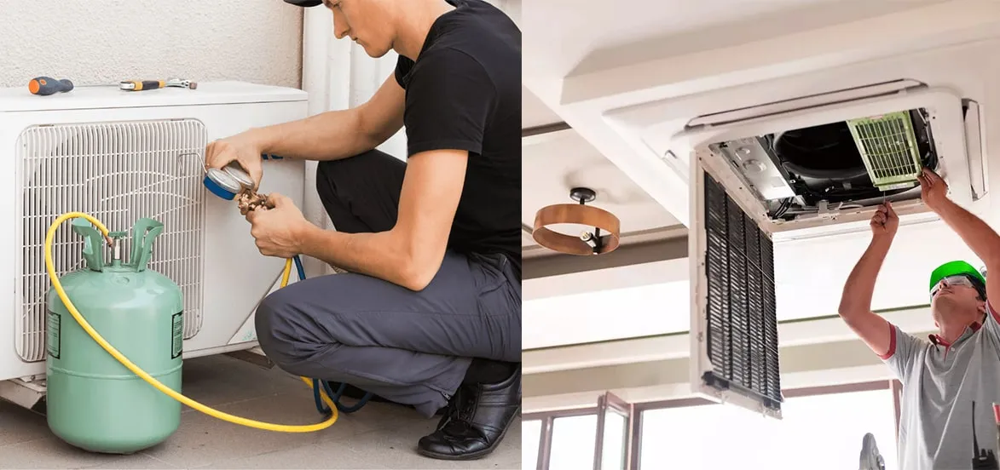

What Errors Cause Air Conditioners To Be Inefficient?

Air conditioners are a need in our daily life. An efficient air conditioner is required in places where temperatures are too low or too high during the winter or summer seasons.
The point of owning an air conditioner is to depend on it to keep you cool throughout the hot summer months. Unfortunately, air conditioners frequently fail when you need them the most, taking excessive time to chill the space.
But why is this case? Why are air conditioners sometimes inefficient?
There are a variety of reasons why your air conditioner may wear out. While some simple efficiency concerns can get resolved by simply changing the air filter, other, more severe problems may necessitate emergency AC Repair in San Diego. You should contact a professional as soon as you detect a problem with your device.
Reduced performance, higher energy bills, and more frequent maintenance and repairs are all symptoms of an inefficient air conditioner. Air conditioner difficulties can be frustrating, whether your home can't stay warm enough in the winter or cool enough in the summer. It's a fair chance that your air conditioner decreases performance if you're having problems.
What Makes An Air Conditioner Inefficient?
There are a few distinct reasons why your air conditioner isn't working efficiently. Some are due to user error, while others are beyond the homeowner's control. Here are a few more possible scenarios.
The System Isn't Being Cared For Properly:The best method to keep your air conditioning unit in top working order is routine maintenance and air conditioning repair. Check your maintenance records if you discover your air conditioner isn't performing as efficiently as it used to. If you forgot about your annual tune-up, remember that it's better to be late than never!
Your Home Is Inadequately Insulated:Have you noticed that the cost of running your air conditioner and heater is increasing? If that's the case, the issue could not be with the systems. Instead, you might be having issues with your home's insulation. Insulation that has decayed or is simply insufficient in a recently renovated space can allow excessive heat to flow into and out of the house. Hiring a professional to upgrade your insulation when needed can help you save money on your energy bills.
The Ductwork Has Failed:If you have a ducted air conditioner, you must ensure that your air ducts are excellent. If they are damaged and leaking, you will be squandering energy while attempting to chill your home thoroughly. The system will have to work much harder than it should to cool the house, and the extra effort will result in higher energy costs.
Filter Blocked:Filters prevent particles from entering your home through the Air ducts. When your filter develops a clog, however, airflow is restricted. Check your filter for visible particles and clean it out. Clean or repair your filter as needed every three months if you want the most effective cooling.
Fuse Blown:You may have a condenser problem if you don't hear the customary noises of your air conditioner turning on, even if you feel some air movement. In this list, you'll cover a variety of condenser-related concerns, but one of the most prevalent is a blown fuse or tripped circuit breaker. If the power change prevents your condenser from working, simply returning electricity should bring your air conditioning back online. While you're verifying the power, double-check that the unit is properly connected.
Condenser Coil Is filthy:When your condenser coil becomes blocked or dusty, it performs less effectively than your filters. Locate and examine your condenser unit. Examine the coil for any dust, debris, or filth that could cause it to malfunction. Then look at the surrounding landscaping. Keep weeds and grasses out of the condenser to avoid clogging it.
Heat And Mass Transfer From The House:Your air conditioner has a lot of power when it comes to changing the temperature in your home. Your air conditioner, on the other hand, can't do everything. How well you control heat transmission also affects climate control in your home. Check for hot spots in your windows, attic, and weather stripping. These hot spots could suggest a heat transfer issue.
Insufficient Refrigerant:The refrigerant in your air conditioning unit, like your car, needs frequent oil changes and top-off services. If your air goes from frigid to warm, you may have low refrigerant levels or perhaps a refrigerant leak. Contact your air conditioner specialist if you discover any leaking fluids while inspecting your unit. Do not attempt to fix a leak yourself.
Thermostat Settings Are Incorrect:As absurd as it may seem, an incorrectly adjusted thermostat is one of the most common causes of climate control issues. Check the air conditioning repair service for the thermostat before you start looking for mechanical problems.
Make sure your thermostat is set to cooling mode. Then have a look at the temperature you've set. A temperature beyond 78 degrees may not be comfortable, but a temperature below 68 degrees may burden your unit, especially if the weather is unusually hot. Consider having an air-conditioner specialist check for issues in the thermostat itself if you alter your thermostat settings and find no change.
Filter Mismatch:Like a bad filter, a filthy filter can create many issues. Make sure your current filter meets the manufacturer's requirements. A restrictive filter can have the same effect as a clogged air filter. Replace the incorrect filter with the correct model as soon as feasible.
Unsuitable Unit:The design of your air conditioner is just as significant as the type of unit. Your present unit may be too small, or your ductwork may not suit the space if it does not sufficiently chill your entire home.
Age:One of the main reasons you're having problems is using old HVAC equipment. Because older units aren't as energy-efficient as modern versions, your heating and cooling system will have to work more to keep up. Furthermore, they raise your energy bill and necessitate frequent AC repair and HVAC maintenance.
Maintenance Issues:Your air conditioner, like your automobile, requires routine maintenance to keep it running smoothly and efficiently year after year. Small faults can become serious if not addressed, and the efficiency of your system will suffer as a result.
Conclusion:
Because the air conditioner is an essential household accessory that keeps living comfortable in extreme weather, there are numerous reasons to keep it well maintained. Experts suggest maintaining it optimally at least once a year; you should also make sure that only professionals work on AC maintenance services. You can trust them as they know what they're doing.
Call an expert Air Conditioning repair service to look over your current setup and point out any problems. You can rely on EZ Heat and Air to get services related to electrical plumbing, heating system, cooling system, and drains. Whether you think you know what's wrong or don't, call our experts to know where to start with your A/C inefficiency.
For the rest of the summer, the team of professionals can assist you in restoring your house to safe and pleasant temperatures. Eliminate these typical culprits if your unit blows warm air, runs continually, or changes air pressure.